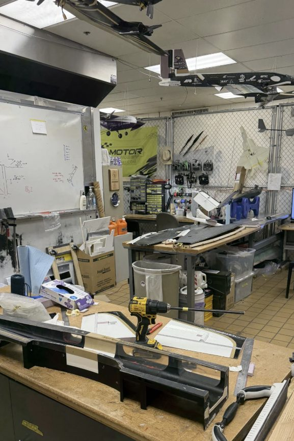
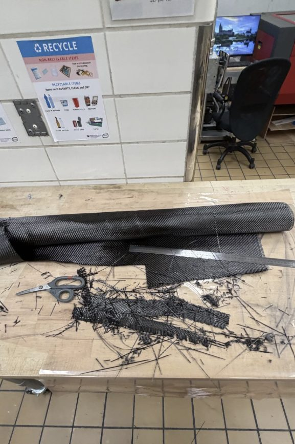
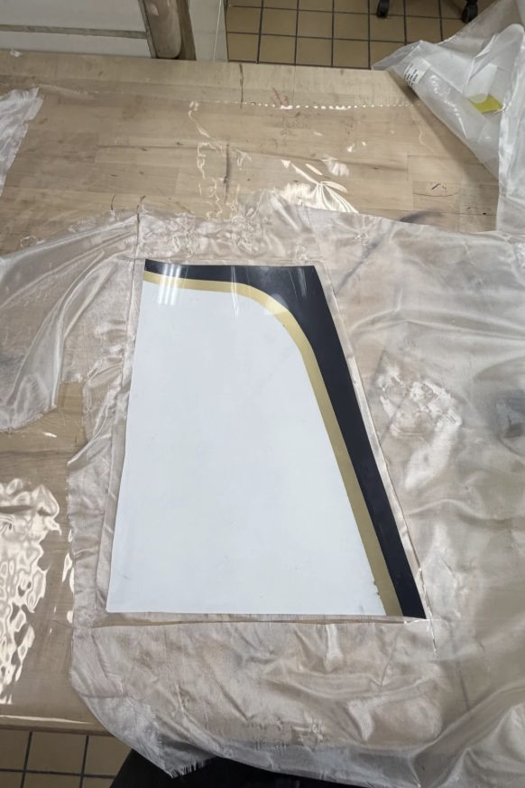
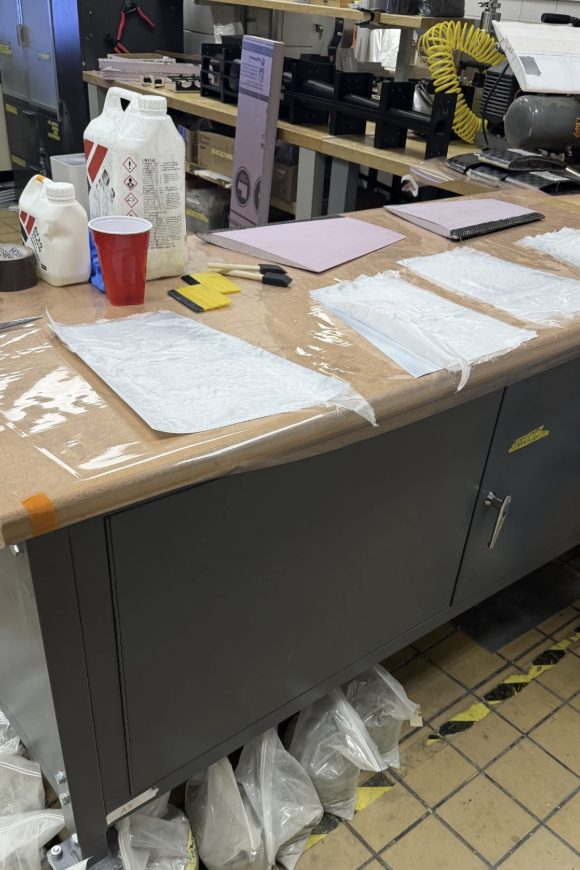
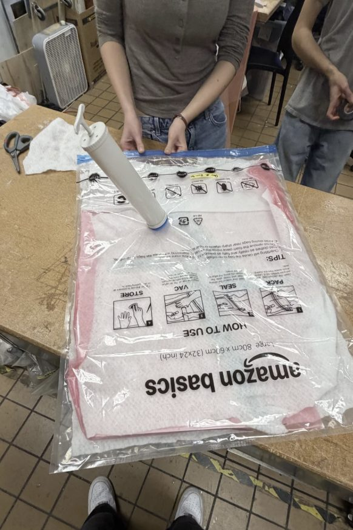

University of Washington
B.S. Aerospace Engineering · Minor in Business Administration
Relevant coursework
Drawing No. MK-2026 · Rev. A
Aerospace Engineering · University of Washington ’28
I build things that have to survive contact with reality — composite structures and flight-ready hardware for competition aircraft, and research code that is honest about what it does and doesn’t prove.
Seattle, Washington
B.S. Aerospace Engineering · Minor in Business Administration
Relevant coursework
Design Build Fly · University of Washington
From the shop





Reproducible research platform · github.com/monishkk/quant-research-platform
Results table
| Universe | 9 US ETFs |
|---|---|
| Sample | 17.9 years · 4,502 trading days |
| Sharpe Δ vs. SPY | +0.111 |
| Block bootstrap | p = 0.53 |
| Deflated Sharpe | 0.70 vs. 0.40 hurdle (192 trials) |
| Excluding 2008 | −0.03 — advantage reverses |
| Monte Carlo null | Beat 300 / 300 random rotations, p < 0.01 |
| Verification | 197 tests, CI on two Python versions |
Programming & Data
Quantitative Methods
CAD & Design
Composites & Manufacturing
Open to internships and project work in aerospace manufacturing, structures, and quantitative research.